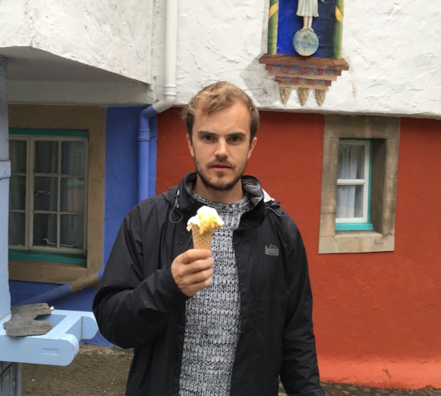

James (Jamie) Townsend
I am currently 'on the market' and looking for a research position
in the Netherlands.
I am a machine learning researcher. I recently completed a PhD, on
lossless compression with latent
variable models, supervised by
Professor David Barber
at the UCL AI Centre in London.
Most of my research to date has been on deep generative models and lossless
compression. I'm also interested in unsupervised learning more generally,
approximate inference, Monte Carlo methods, optimization and the design of
machine learning software systems.
During the PhD I spent a lot of time working on the Python/NumPy automatic
differentiation software
Autograd. I interned under the
tutelage of Matthew Johnson
at Google Brain in San Francisco in Spring 2018, where I was fortunate enough
to work on JAX during the early
stages of the project.
I use the name James on publications and official documents; for
everything else, I use Jamie.
Github: @j-towns
Twitter: @_j_towns
Google Scholar:
James Townsend
Email: james.townsend@cs.ucl.ac.uk
Publications and preprints
-
Daniel Severo*, James Townsend*, Ashish Khisti, Alireza Makhzani, and Karen
Ullrich,
Compressing Multisets with Large Alphabets,
arXiv preprint:
https://arxiv.org/abs/2001.09186. *Equal contribution.
-
Yangjun Ruan, Karen Ullrich, Daniel Severo, James Townsend, Ashish Khisti,
Arnaud Doucet, Alireza Makhzani, and Chris J. Maddison,
Improving Lossless Compression Rates via Monte Carlo Bits-Back
Coding,
International Conference on Machine Learning (ICML),
2021.
ArXiv preprint:
https://arxiv.org/abs/2102.11086.
-
James Townsend and Iain Murray,
Lossless Compression with State Space Models Using Bits Back
Coding,
Neural Compression: From Information Theory to Applications -- Workshop @
ICLR 2021.
-
James Townsend,
Lossless Compression with Latent Variable Models,
PhD Thesis,
2021.
ArXiv preprint:
https://arxiv.org/abs/2104.10544.
-
James Townsend, Thomas Bird, Julius Kunze, and David Barber,
HiLLoC: Lossless
Image Compression with Hierarchical Latent Variable Models,
International Conference on Learning Representations (ICLR),
2020.
-
James Townsend,
A Tutorial on the Range Variant of Asymmetric Numeral Systems,
arXiv preprint:
https://arxiv.org/abs/2001.09186.
-
James Townsend, Thomas Bird, and David Barber,
Practical Lossless Compression with Latent Variables Using Bits Back
Coding,
International Conference on Learning Representations (ICLR),
2019.
-
Jonathan So, James Townsend, and Benoit Gaujac,
EP Structured Variational Autoencoders,
1st Symposium on Advances in Approximate Bayesian Inference,
2018.
-
James Townsend, Niklas Koep, and Sebastian Weichwald,
Pymanopt: A Python Toolbox for Optimization on Manifolds using
Automatic Differentiation,
Journal of Machine Learning Research, vol. 17, no. 137, pp. 1–5,
2016.